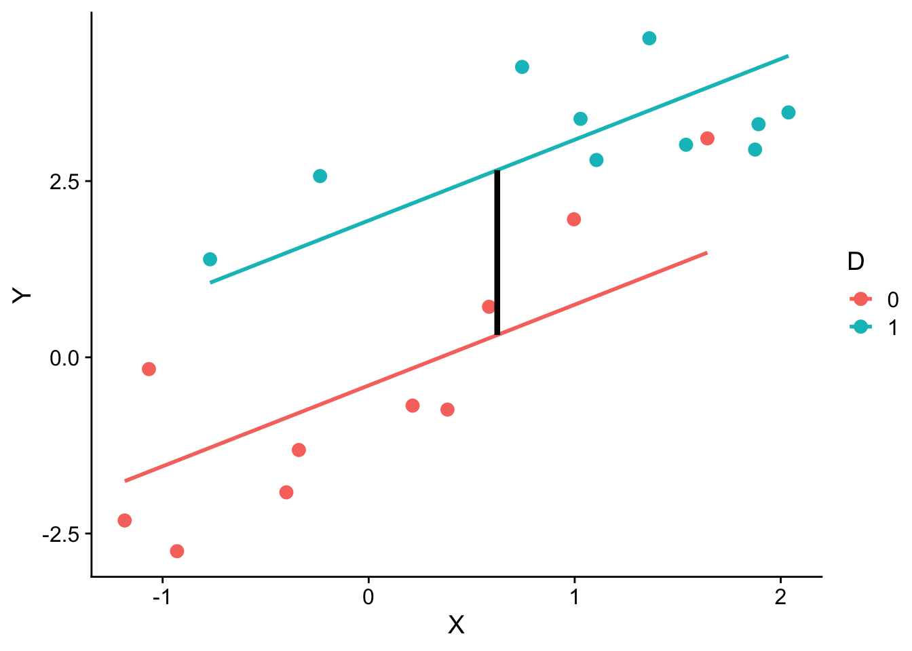
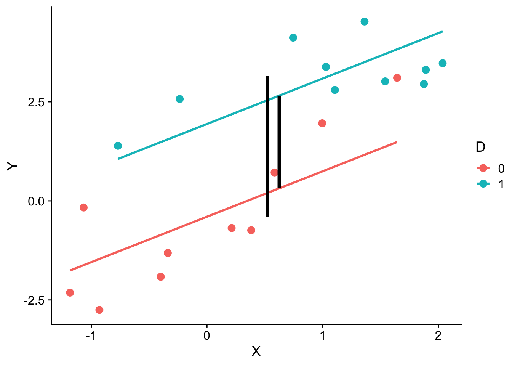
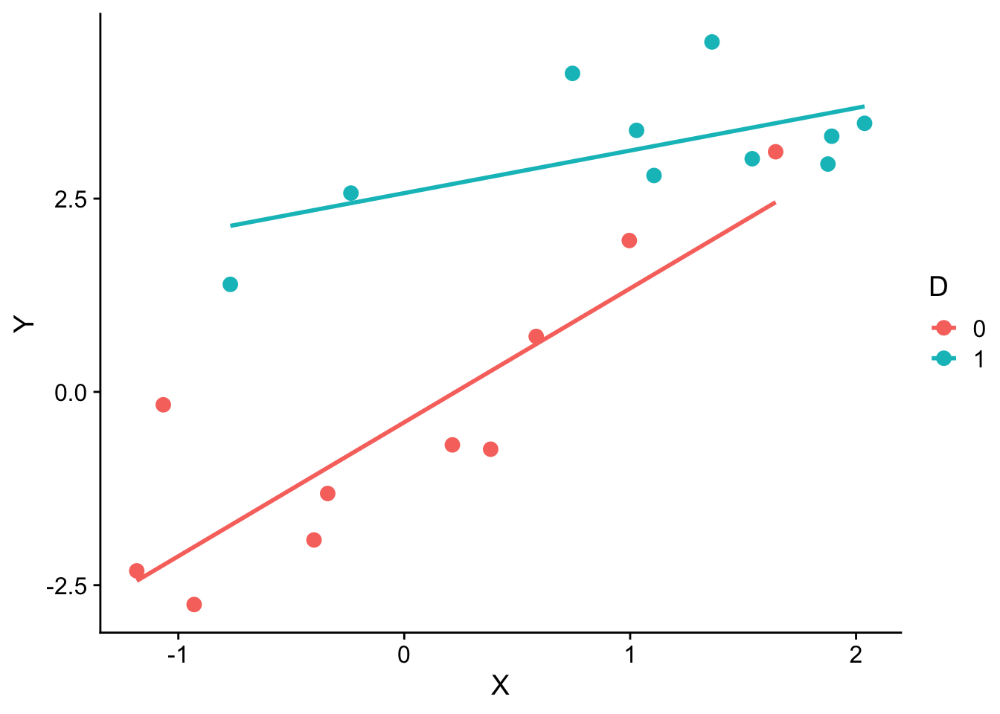
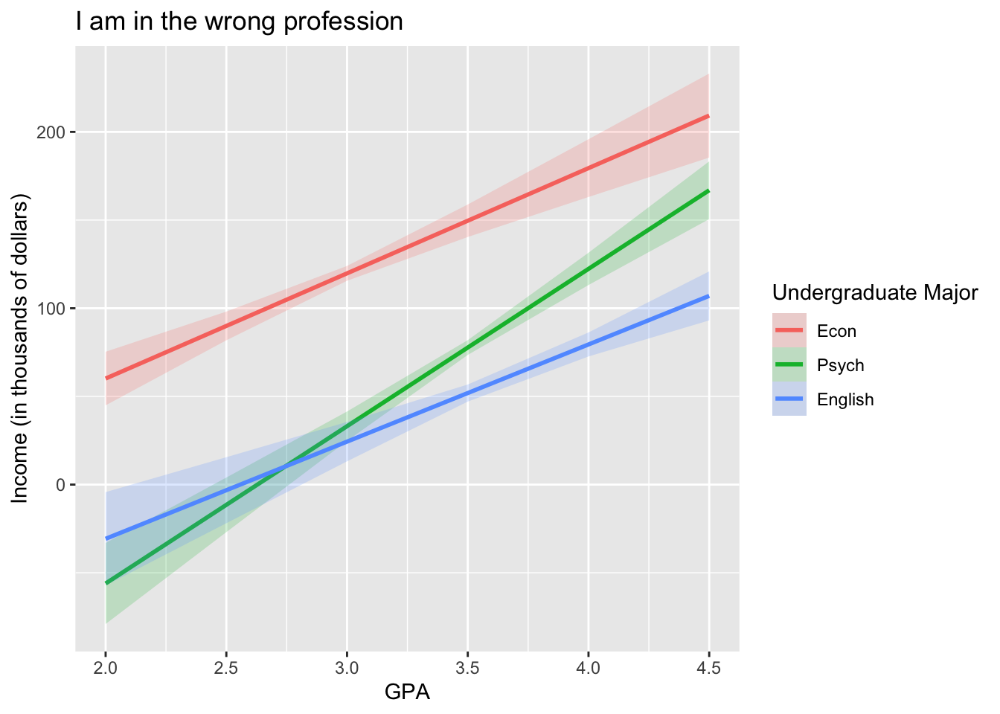
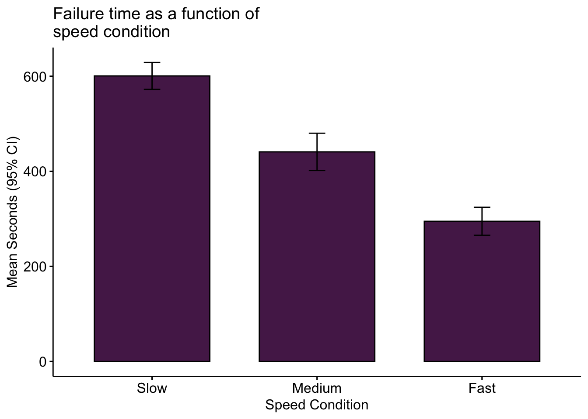
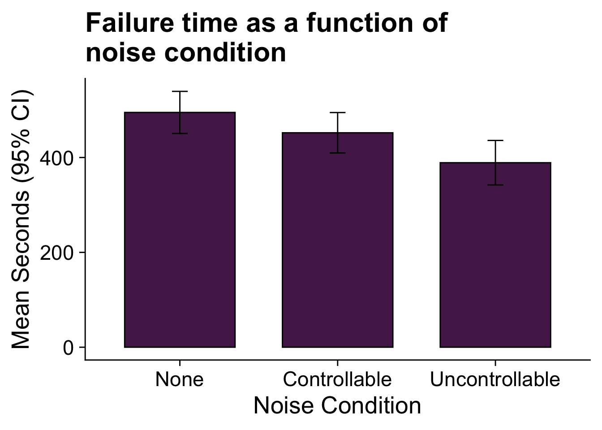
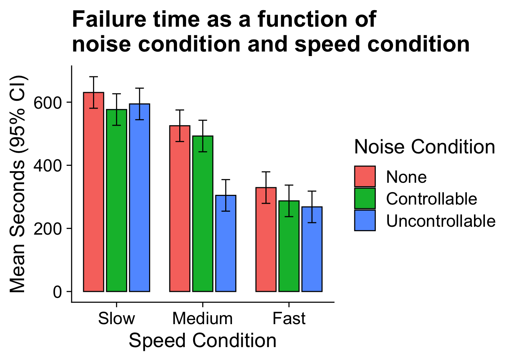

Consider the case where D is a variable representing two groups. In a univariate regression, how do we interpret the coefficient for D?
\[\hat{Y} = b_{0} + b_{1}D\]
Interpreting slopes
Extending this to the multivariate case, where X is continuous and D is a dummy code representing two groups.
\[\hat{Y} = b_{0} + b_{1}D + b_2X\]
How do we interpret \(b_1?\)
Visualizing
Code
set.seed(022520)D =rep(c(0,1), each =10)X =rnorm(20) + DY =2*D + X +rnorm(20)df =data.frame(X,Y,D)means = df %>%group_by(D) %>%summarize(M =mean(Y))mod =lm(Y ~ X + D, data = df)df$pmod =predict(mod)predict.2=data.frame(X =rep(mean(X)+.1,2), D =c(0,1))predict.2$Y =predict(mod, newdata = predict.2) predict.2=cbind(predict.2[1,], predict.2[2,])names(predict.2) =c("x1", "d1", "y1", "x2", "d2", "y2")ggplot(df, aes(X,Y, color =as.factor(D))) +geom_point(size =3) +geom_smooth(aes(y = pmod), method ="lm", se = F)+labs(color ="D") +geom_segment(aes(x = x1, y = y1, xend = x2, yend = y2), data = predict.2, inherit.aes = F, size =1.5)+ cowplot::theme_cowplot()
Warning: Using `size` aesthetic for lines was deprecated in ggplot2 3.4.0.
ℹ Please use `linewidth` instead.
`geom_smooth()` using formula = 'y ~ x'

Visualizing

Interactions
Now extend this example to include joint effects, not just additive effects:
\[\hat{Y} = b_{0} + b_{1}D + b_2X + b_3DX\]
How do we interpret \(b_1?\), \(b_2\), \(b_3?\)?
Visualizing
Code
ggplot(df, aes(X,Y, color =as.factor(D))) +geom_point(size =3) +geom_smooth(method ="lm", se = F)+labs(color ="D") + cowplot::theme_cowplot()
`geom_smooth()` using formula = 'y ~ x'

Where should we draw the segment to compare means?
???
Where you draw the segment changes the difference in means. That’s why \(b_1\) can only be interpreted as the difference in means when X = 0.
Example
Wash U is interested in understanding how undergraduates’ academic performance and choice of major impacts their career success. They contact 150 alumni between the ages of 25 and 35 and collect their current salary (in thousands of dollars), their primary undergraduate major, and their GPA upon graduating.
Code
library(psych)
Attaching package: 'psych'
The following objects are masked from 'package:ggplot2':
%+%, alpha
Code
table(inc_data$major)
Econ English Psych
50 50 50
Code
describe(inc_data[,c("gpa", "income")], fast = T)
vars n mean sd median min max range skew kurtosis se
gpa 1 150 3.36 0.4 3.36 2.44 4.19 1.74 -0.22 -0.65 0.03
income 2 150 84.35 34.0 82.23 24.67 160.27 135.60 0.15 -0.90 2.78
Code
career.mod =lm(income ~ gpa*major, data = inc_data)summary(career.mod)
Call:
lm(formula = income ~ gpa * major, data = inc_data)
Residuals:
Min 1Q Median 3Q Max
-42.625 -11.869 0.376 9.301 40.942
Coefficients:
Estimate Std. Error t value Pr(>|t|)
(Intercept) -59.181 22.902 -2.584 0.0108 *
gpa 59.660 7.705 7.743 1.58e-12 ***
majorEnglish -81.747 37.149 -2.201 0.0294 *
majorPsych -175.314 35.462 -4.944 2.10e-06 ***
gpa:majorEnglish -4.562 11.089 -0.411 0.6814
gpa:majorPsych 29.545 10.949 2.698 0.0078 **
---
Signif. codes: 0 '***' 0.001 '**' 0.01 '*' 0.05 '.' 0.1 ' ' 1
Residual standard error: 14.91 on 144 degrees of freedom
Multiple R-squared: 0.8142, Adjusted R-squared: 0.8077
F-statistic: 126.2 on 5 and 144 DF, p-value: < 2.2e-16
Pop Quiz
For the model just defined in the previous slide…
Write out the regression equation
Interpret each term
Where is Econ?
Model summary: centering predictors
inc_data$gpa_c = inc_data$gpa -mean(inc_data$gpa)career.mod_c =lm(income ~ gpa_c*major, data = inc_data)summary(career.mod_c)
Call:
lm(formula = income ~ gpa_c * major, data = inc_data)
Residuals:
Min 1Q Median 3Q Max
-42.625 -11.869 0.376 9.301 40.942
Coefficients:
Estimate Std. Error t value Pr(>|t|)
(Intercept) 141.428 3.752 37.691 < 2e-16 ***
gpa_c 59.660 7.705 7.743 1.58e-12 ***
majorEnglish -97.086 4.907 -19.783 < 2e-16 ***
majorPsych -75.965 4.384 -17.327 < 2e-16 ***
gpa_c:majorEnglish -4.562 11.089 -0.411 0.6814
gpa_c:majorPsych 29.545 10.949 2.698 0.0078 **
---
Signif. codes: 0 '***' 0.001 '**' 0.01 '*' 0.05 '.' 0.1 ' ' 1
Residual standard error: 14.91 on 144 degrees of freedom
Multiple R-squared: 0.8142, Adjusted R-squared: 0.8077
F-statistic: 126.2 on 5 and 144 DF, p-value: < 2.2e-16
Some of the focal terms are of type `character`. This may lead to
unexpected results. It is recommended to convert these variables to
factors before fitting the model.
The following variables are of type character: `major`
Code
ggplot(data = predictedvals, aes(x = x, y = predicted, group = group)) +geom_smooth(aes(ymin = conf.low,ymax = conf.high,color = group,fill = group),stat ="identity",alpha = .2) +labs(x ="GPA",y ="Income (in thousands of dollars)",title ="I am in the wrong profession",color ="Undergraduate Major",fill ="Undergraduate Major",group ="Undergraduate Major")
Some of the focal terms are of type `character`. This may lead to
unexpected results. It is recommended to convert these variables to
factors before fitting the model.
The following variables are of type character: `major`
Code
ggplot(data = predictedvals, aes(x = x, y = predicted, group = group)) +geom_smooth(aes(ymin = conf.low,ymax = conf.high,color = group,fill = group),stat ="identity",alpha = .2) +labs(x ="GPA",y ="Income (in thousands of dollars)",title ="I am in the wrong profession",color ="Undergraduate Major",fill ="Undergraduate Major",group ="Undergraduate Major")

Factorial ANOVA
The interaction of two or more categorical variables in a general linear model is formally known as Factorial ANOVA.
A factorial design is used when there is an interest in how two or more variables (or factors) affect the outcome.
Rather than conduct separate one-way ANOVAs for each factor, they are all included in one analysis.
The unique and important advantage to a factorial ANOVA over separate one-way ANOVAs is the ability to examine interactions.
Code
set.seed(23)SD=120DV_Slow_N <-rnorm(20,mean=600,sd=SD) # draw 20 from normal distributionDV_Slow_C <-rnorm(20,mean=590,sd=SD) # draw 20 from normal distributionDV_Slow_U <-rnorm(20,mean=585,sd=SD) # draw 20 from normal distributionDV_Med_N <-rnorm(20,mean=550,sd=SD) # draw 20 from normalDV_Med_C <-rnorm(20,mean=450,sd=SD) # draw 20 from normalDV_Med_U <-rnorm(20,mean=300,sd=SD) # draw 20 from normalDV_Fast_N <-rnorm(20,mean=310,sd=SD) # draw 20 from normalDV_Fast_C <-rnorm(20,mean=305,sd=SD) # draw 20 from normalDV_Fast_U <-rnorm(20,mean=290,sd=SD) # draw 20 from normal# put DVs together in a data frame; specify Speed and Noise ValuesData =data.frame(Time =c(DV_Slow_N, DV_Slow_C, DV_Slow_U, DV_Med_N, DV_Med_C, DV_Med_U, DV_Fast_N, DV_Fast_C, DV_Fast_U),Speed =rep(c("Slow", "Medium", "Fast"), each =60),Noise =rep(rep(c("None", "Controllable", "Uncontrollable"), each =20), 3)) #repeat each label 20 times, then repeat that whole sequence 3 timesData$Speed =factor(Data$Speed, levels =c("Slow", "Medium", "Fast")) # set order of levels as I want them presentedData$Noise =factor(Data$Noise, levels =c("None", "Controllable", "Uncontrollable")) # set order of levels as I want them presented
The example data are from a simulated study in which 180 participants performed an eye-hand coordination task in which they were required to keep a mouse pointer on a red dot that moved in a circular motion.
The outcome was the time of the 10th failure. The experiment used a completely crossed, 3 x 3 factorial design. One factor was dot speed: .5, 1, or 1.5 revolutions per second. The second factor was noise condition. Some participants performed the task without any noise; others were subjected to periodic and unpredictable 3-second bursts of 85 dB white noise played over earphones. Of those subjected to noise, half could do nothing to stop the noise (uncontrollable noise); half believed they could stop the noise by pressing a button (controllable noise).
Terminology
In a completely crossed factorial design, each level of one factor occurs in combination with each level of the other factor.
If equal numbers of participants occur in each combination, the design is balanced. This has some distinct advantages (described later).
Slow
Medium
Fast
No Noise
X
X
X
Controllable Noise
X
X
X
Uncontrollable Noise
X
X
X
Terminology
We describe the factorial ANOVA design by the number of levels of each factor.
Factor: a variable that is being manipulated or in which there are two or more groups
Level: the different groups within a factor
In this case, we have a 3 x 3 ANOVA (“three by three”), because our first factor (speed) has three levels (slow, medium, and fast) and our second factor (noise) also has three levels (none, controllable, and uncontrollable)
Questions
Code
mean.summary = Data %>%group_by(Noise, Speed) %>%summarize(Time =mean(Time)) %>%spread("Speed", "Time")
`summarise()` has grouped output by 'Noise'. You can override using the
`.groups` argument.
library(ggpubr)ggbarplot(data = Data, x ="Speed", y ="Time", add =c("mean_ci"), fill ="#562457", xlab ="Speed Condition", ylab ="Mean Seconds (95% CI)", title ="Failure time as a function of\nspeed condition")

Looks like the mean differences are substantial. The ANOVA will be able to tell us if the means are significantly different and the magnitude of those differences in terms of variance accounted for.
Marginal means
Noise
Slow
Medium
Fast
Marginal
None
630.72
525.29
329.28
495.10
Controllable
576.67
492.72
287.23
452.21
Uncontrollable
594.44
304.62
268.16
389.08
Marginal
600.61
440.88
294.89
445.46
Regardless of dot speed, does noise condition affect performance? Performance declines in the presence of noise, especially if the noise is uncontrollable.
Here, too adding information about variability allows us a sense of whether these are significant and meaningful differences…
Code
ggbarplot(data = Data, x ="Noise", y ="Time", add =c("mean_ci"), fill ="#562457", xlab ="Noise Condition", ylab ="Mean Seconds (95% CI)", title ="Failure time as a function of\nnoise condition") + cowplot::theme_cowplot(font_size =20)

The mean differences are not as apparent for this factor
Marginal means
Noise
Slow
Medium
Fast
Marginal
None
630.72
525.29
329.28
495.10
Controllable
576.67
492.72
287.23
452.21
Uncontrollable
594.44
304.62
268.16
389.08
Marginal
600.61
440.88
294.89
445.46
The marginal mean differences correspond to main effects. They tell us what impact a particular factor has, ignoring the impact of the other factor.
The remaining effect in a factorial design, and it primary advantage over separate one-way ANOVAs, is the ability to examine conditional mean differences.
The Linear Model Way
summary(lm(Time ~ Noise*Speed, data = Data))
Call:
lm(formula = Time ~ Noise * Speed, data = Data)
Residuals:
Min 1Q Median 3Q Max
-316.23 -70.82 4.99 79.87 244.40
Coefficients:
Estimate Std. Error t value Pr(>|t|)
(Intercept) 630.72 25.32 24.908 < 2e-16 ***
NoiseControllable -54.05 35.81 -1.509 0.13305
NoiseUncontrollable -36.28 35.81 -1.013 0.31243
SpeedMedium -105.44 35.81 -2.944 0.00369 **
SpeedFast -301.45 35.81 -8.418 1.49e-14 ***
NoiseControllable:SpeedMedium 21.48 50.64 0.424 0.67201
NoiseUncontrollable:SpeedMedium -184.39 50.64 -3.641 0.00036 ***
NoiseControllable:SpeedFast 12.01 50.64 0.237 0.81287
NoiseUncontrollable:SpeedFast -24.84 50.64 -0.490 0.62448
---
Signif. codes: 0 '***' 0.001 '**' 0.01 '*' 0.05 '.' 0.1 ' ' 1
Residual standard error: 113.2 on 171 degrees of freedom
Multiple R-squared: 0.6109, Adjusted R-squared: 0.5927
F-statistic: 33.56 on 8 and 171 DF, p-value: < 2.2e-16
Mean differences
Noise
Slow
Medium
Fast
Marginal
None
630.72
525.29
329.28
495.10
Controllable
576.67
492.72
287.23
452.21
Uncontrollable
594.44
304.62
268.16
389.08
Marginal
600.61
440.88
294.89
445.46
Are the marginal mean differences for noise condition a good representation of what is happening within each of the dot speed conditions?
If not, then we would need to say that the noise condition effect depends upon (is conditional on) dot speed. We would have an interaction between noise condition and dot speed condition.
Code
library(sjPlot)library(tidyverse)model =lm(Time ~Speed*Noise, data = Data)model.data =plot_model(model, type ="int")$datamodel.data %>%ggplot(aes(x = x, y = predicted, fill = group)) +geom_bar(stat ="identity", position =position_dodge(width = .8), color ="black", width = .7) +geom_errorbar(aes(ymin = conf.low, ymax = conf.high), width = .3, position =position_dodge(width = .8)) +scale_x_continuous("Speed Condition", breaks =c(1, 2,3), labels =c("Slow", "Medium", "Fast")) +labs(y ="Mean Seconds (95% CI)", fill ="Noise Condition", title ="Failure time as a function of\nnoise condition and speed condition") +cowplot::theme_cowplot(font_size =20)

The noise condition means are most distinctly different in the medium speed condition. The noise condition means are clearly not different in the fast speed condition.
Interpretation of significance tests
Code
fit =lm(Time ~ Speed*Noise, data = Data)anova(fit)
Analysis of Variance Table
Response: Time
Df Sum Sq Mean Sq F value Pr(>F)
Speed 2 2805871 1402936 109.3975 < 2.2e-16 ***
Noise 2 341315 170658 13.3075 4.252e-06 ***
Speed:Noise 4 295720 73930 5.7649 0.0002241 ***
Residuals 171 2192939 12824
---
Signif. codes: 0 '***' 0.001 '**' 0.01 '*' 0.05 '.' 0.1 ' ' 1
All three null hypotheses are rejected. This only tells us that systemic differences among the means are present; follow-up comparisons are necessary to determine the nature of the differences.
summary(fit)
Call:
lm(formula = Time ~ Speed * Noise, data = Data)
Residuals:
Min 1Q Median 3Q Max
-316.23 -70.82 4.99 79.87 244.40
Coefficients:
Estimate Std. Error t value Pr(>|t|)
(Intercept) 630.72 25.32 24.908 < 2e-16 ***
SpeedMedium -105.44 35.81 -2.944 0.00369 **
SpeedFast -301.45 35.81 -8.418 1.49e-14 ***
NoiseControllable -54.05 35.81 -1.509 0.13305
NoiseUncontrollable -36.28 35.81 -1.013 0.31243
SpeedMedium:NoiseControllable 21.48 50.64 0.424 0.67201
SpeedFast:NoiseControllable 12.01 50.64 0.237 0.81287
SpeedMedium:NoiseUncontrollable -184.39 50.64 -3.641 0.00036 ***
SpeedFast:NoiseUncontrollable -24.84 50.64 -0.490 0.62448
---
Signif. codes: 0 '***' 0.001 '**' 0.01 '*' 0.05 '.' 0.1 ' ' 1
Residual standard error: 113.2 on 171 degrees of freedom
Multiple R-squared: 0.6109, Adjusted R-squared: 0.5927
F-statistic: 33.56 on 8 and 171 DF, p-value: < 2.2e-16
library(emmeans)
Welcome to emmeans.
Caution: You lose important information if you filter this package's results.
See '? untidy'
contrast estimate SE df t.ratio p.value
Slow None - Medium None 105.4 35.8 171 2.944 0.0856
Slow None - Fast None 301.4 35.8 171 8.418 <.0001
Slow None - Slow Controllable 54.1 35.8 171 1.509 0.8498
Slow None - Medium Controllable 138.0 35.8 171 3.854 0.0051
Slow None - Fast Controllable 343.5 35.8 171 9.592 <.0001
Slow None - Slow Uncontrollable 36.3 35.8 171 1.013 0.9842
Slow None - Medium Uncontrollable 326.1 35.8 171 9.106 <.0001
Slow None - Fast Uncontrollable 362.6 35.8 171 10.124 <.0001
Medium None - Fast None 196.0 35.8 171 5.473 <.0001
Medium None - Slow Controllable -51.4 35.8 171 -1.435 0.8828
Medium None - Medium Controllable 32.6 35.8 171 0.910 0.9922
Medium None - Fast Controllable 238.1 35.8 171 6.648 <.0001
Medium None - Slow Uncontrollable -69.2 35.8 171 -1.931 0.5933
Medium None - Medium Uncontrollable 220.7 35.8 171 6.162 <.0001
Medium None - Fast Uncontrollable 257.1 35.8 171 7.180 <.0001
Fast None - Slow Controllable -247.4 35.8 171 -6.908 <.0001
Fast None - Medium Controllable -163.4 35.8 171 -4.564 0.0003
Fast None - Fast Controllable 42.0 35.8 171 1.174 0.9609
Fast None - Slow Uncontrollable -265.2 35.8 171 -7.405 <.0001
Fast None - Medium Uncontrollable 24.7 35.8 171 0.689 0.9989
Fast None - Fast Uncontrollable 61.1 35.8 171 1.707 0.7417
Slow Controllable - Medium Controllable 84.0 35.8 171 2.344 0.3219
Slow Controllable - Fast Controllable 289.4 35.8 171 8.082 <.0001
Slow Controllable - Slow Uncontrollable -17.8 35.8 171 -0.496 0.9999
Slow Controllable - Medium Uncontrollable 272.1 35.8 171 7.597 <.0001
Slow Controllable - Fast Uncontrollable 308.5 35.8 171 8.615 <.0001
Medium Controllable - Fast Controllable 205.5 35.8 171 5.738 <.0001
Medium Controllable - Slow Uncontrollable -101.7 35.8 171 -2.841 0.1114
Medium Controllable - Medium Uncontrollable 188.1 35.8 171 5.252 <.0001
Medium Controllable - Fast Uncontrollable 224.6 35.8 171 6.271 <.0001
Fast Controllable - Slow Uncontrollable -307.2 35.8 171 -8.579 <.0001
Fast Controllable - Medium Uncontrollable -17.4 35.8 171 -0.486 0.9999
Fast Controllable - Fast Uncontrollable 19.1 35.8 171 0.533 0.9998
Slow Uncontrollable - Medium Uncontrollable 289.8 35.8 171 8.093 <.0001
Slow Uncontrollable - Fast Uncontrollable 326.3 35.8 171 9.111 <.0001
Medium Uncontrollable - Fast Uncontrollable 36.5 35.8 171 1.018 0.9837
P value adjustment: tukey method for comparing a family of 9 estimates
Marginal contrasts
emmeans(fit, pairwise ~ Speed)
NOTE: Results may be misleading due to involvement in interactions
$emmeans
Speed emmean SE df lower.CL upper.CL
Slow 601 14.6 171 572 629
Medium 441 14.6 171 412 470
Fast 295 14.6 171 266 324
Results are averaged over the levels of: Noise
Confidence level used: 0.95
$contrasts
contrast estimate SE df t.ratio p.value
Slow - Medium 160 20.7 171 7.726 <.0001
Slow - Fast 306 20.7 171 14.787 <.0001
Medium - Fast 146 20.7 171 7.061 <.0001
Results are averaged over the levels of: Noise
P value adjustment: tukey method for comparing a family of 3 estimates
effect sizes
em.ef <-emmeans(fit, pairwise ~ Speed)
NOTE: Results may be misleading due to involvement in interactions
eff_size(em.ef, sigma =sigma(fit), edf =171)
Since 'object' is a list, we are using the contrasts already present.
contrast effect.size SE df lower.CL upper.CL
(Slow - Medium) 1.41 0.198 171 1.020 1.80
(Slow - Fast) 2.70 0.234 171 2.238 3.16
(Medium - Fast) 1.29 0.195 171 0.903 1.67
Results are averaged over the levels of: Noise
sigma used for effect sizes: 113.2
Confidence level used: 0.95